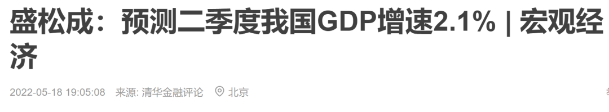
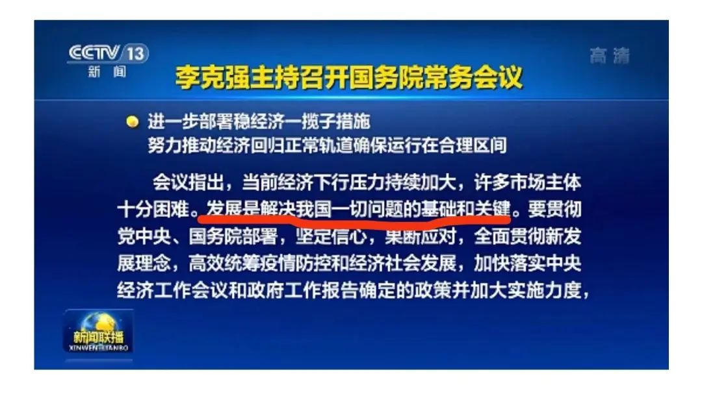
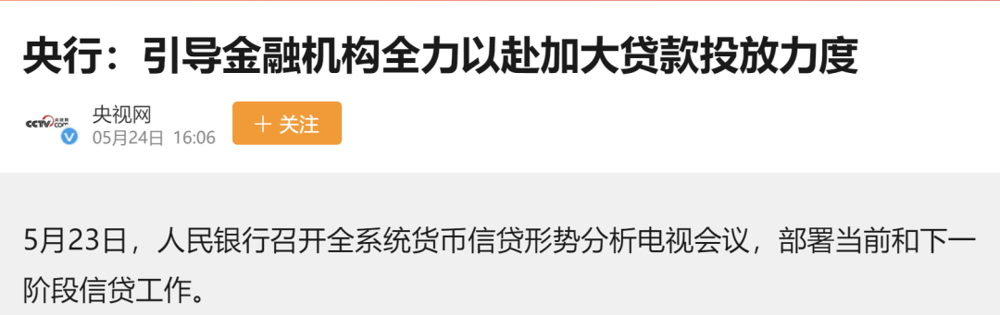
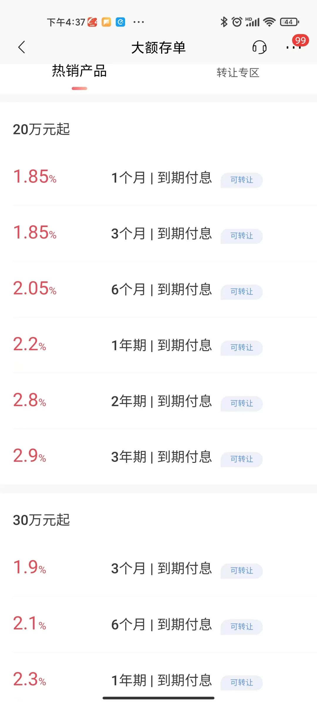
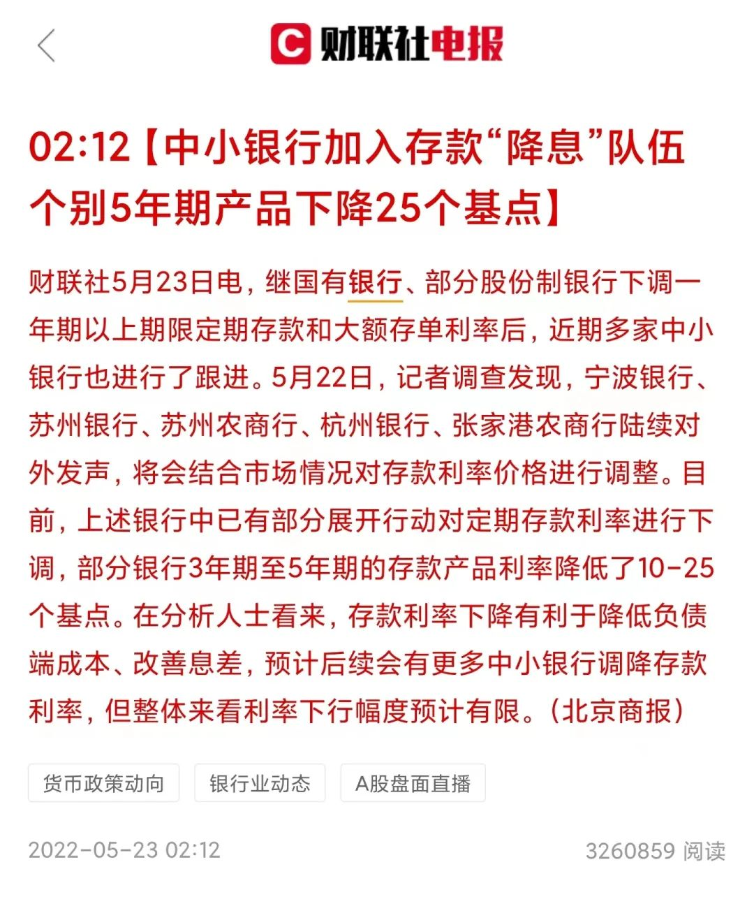
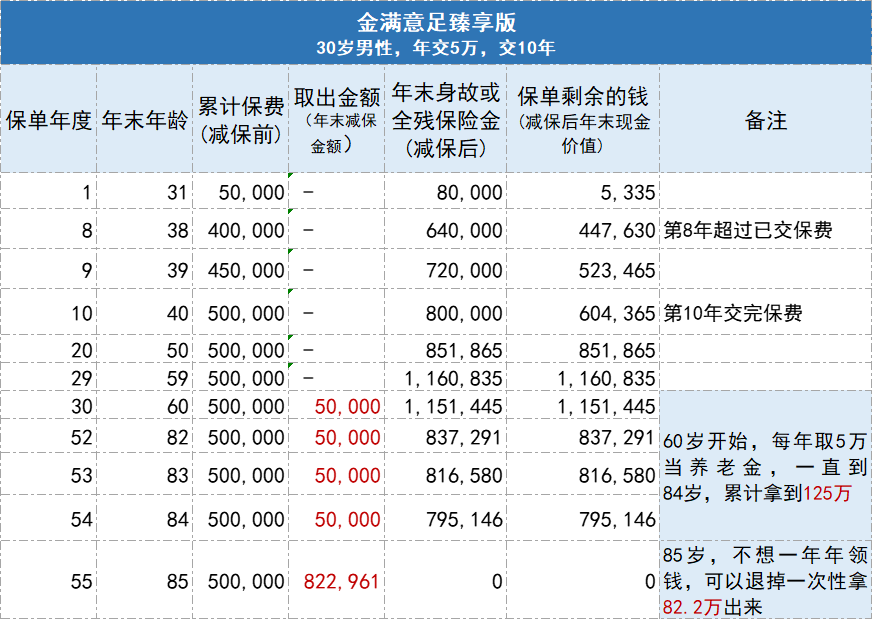

你存钱的利息越来越少了
原创 V姐万事屋 V姐来了 2022-05-25 12:00 发表于上海
原文链接(长) 原文链接(短)
Hi，我是V姐。
这两天看到有专业人士预测：二季度GDP增速在2.1%左右，上半年增速预计是3.5%。

盛松成是中欧国际工商学院经济学与金融学教授、人民银行调查统计司原司长。
人民银行内部的数据显示，1-4月居民存款比去年同期增加2万亿，从5.08万亿增加到7.12万亿。倾向于多投资的居民比上个季度减少1.9%，同时居民贷款大幅减少。
意思就是老百姓开始 **偏爱存钱，少投资，少消费**。
这个事很正常，主要就是预期不稳。
平时呢，我恨不得家里人敞开吃，时不时帮我清空存货。现在我不知道还要封多久，团购会不会随时被叫停，那么我就得拼命往冰箱囤货，冰箱不满不行。
以前我老公吃牛排是5分熟，现在我建议他5分饱就好了。
周一新闻联播，重点播报了国常会稳经济6大项33条。

这里面核心定调就一句话： **发展是解决我国一切问题的基础和关键。**
长江黄河不能倒流，历史的车轮滚滚向前，发展才是硬道理。
23号，央行召开全系统货币信贷形势分析会议。

全力以赴加大贷款投放力度。
从目前的态度看，为了刺激经济，今年的降息大概率不止一波。这种情况下，贷款减少的同时，存款利率也降低了。
目前招行大额存款的利息，最高也就2.9%。

大行这样做也就算了，毕竟不缺存款。现在就连中小银行也开始加入了“降息”的队伍。

而且长期看，随着GDP增速的下降，居民债务水平的不断攀升，利率降低是一个大趋势。也就意味着存款利息也不断降低。
对于喜欢把钱放在银行的朋友来说，这肯定不是个好消息。
除了存款利息，现金管理类的理财产品，利率都会持续走低。想当初余额宝横空出世，年化利率高达6%，现在只有1.74%。
如果你是一个喜欢每年存一些钱，保证稳健收益的人，或许可以考虑一下近两年热度很高的增额终身寿险，这是一种长期持有能锁定3.5%左右利率的保险产品。 [金满意足臻享版](https://mp.weixin.qq.com/s/vvegBqfHYwi8WMVygoG40w)
一般情况下，我倾向于买杠杆率高的保险，让保险充分发挥财务兜底的功效。而增额寿在我看来，更像是高配版储蓄产品。
后台包括我们社群，都不断有朋友问及增额寿险这类产品，我思考了一下，个人认为这类产品适合以下三类人：
**1、不擅长理财的人士**
人群里相当一部分人，其实是不擅长理财的。靠运气赚1年的收益，有可能2周亏光了。
今年到现在，风险等级较低的固收+理财产品，也大面积出现了亏损。资管新规开始实施后，1季度市场上就有3000多只理财产品跌破净值，这对于偏稳健的朋友来说是非常难受的。
这种情况下呢，买余额宝都跑赢90%的人了，如果持有接近3.5%年化的保本产品，肯定是划算的。
市面上不错的增额寿就可以做到这个利率并长期锁定。
如果你没有时间研究股票基金，喜欢将钱存在银行里面，那也可以适当配置一部分这类保险产品，以 [金满意足臻享版](https://mp.weixin.qq.com/s/vvegBqfHYwi8WMVygoG40w) 为例，它的门槛是每年5000元起，长期持有的情况年化能无限接近3.5%左右，而且这个利率能锁定几十甚至一辈子。
另外，金满意足臻享版支持“减保”，保单开始盈利之后，有需要可以将保单的现金价值部分领取，就像个按需索取的账户，既能锁定不错的利率，后期也支持灵活减保领取。
**2、担心养老的人士**
人的收入曲线不会一直上升，基本35-45之后开始下降。而且人打理财富，让资产增值的能力，也会随着衰老而减弱。
因此老了之后呢，肯定是希望每年有稳定的补充现金池，来辅助养老。
还有结婚率生育率一路走低，很多朋友都喊着不婚不育。这类朋友来咨询我的时候，我都建议配置好保险。因此具备“减保”功能的保单呢，会更适合担心养老的人士。
比如你在收入巅峰30岁左右，每年存5万，存10年。
60岁时，每年都可以取5万出来，一直到84岁，累积拿125万。85岁，可以一次性把82.2万都拿走。累积拿走207.2万。

算是一个养老的资金池。
**3、生意人**
生意人呢，特点就是收入不稳定。有钱的时候容易激进，年景不好的时候，资金链又容易断裂。
这类朋友对杠杆的使用轻车熟路，充分理解资本的属性，知道优质抵押物很值钱，信用很珍贵。
增额寿险呢，它的现金价值是可以直接抵押给银行，贷出8成来的，而且不上征信。比如300万现金价值的保单，可以贷出240万，不上征信。
如果经济实力不错的朋友，可以考虑配置大额的增额寿险。
按照国家规定，目前所有储蓄险产品的预定利率都不能超过3.5%，这款产品是可以达到3.49%的复利，基本顶着天花板了。而且5月31号之后这个款产品也要下架了，我也了解到，只要赶在下架前买到手，未来拿钱就是确定的，不会受下架的影响。
感兴趣的朋友戳这里了解一下。
[金满意足臻享版](https://mp.weixin.qq.com/s/vvegBqfHYwi8WMVygoG40w)
最后再提醒一下，增额寿险适合10年都可以放在里面不动的钱，10年内取出是不划算的，因此这是一个长期的配置。还有就是这类保险有15天冷静期，就算你买了，15天内也可以反悔，咱们要知道自己这个权益哈。
另外，买保险，尤其这种金额较大的，一定要让保险顾问帮你做好收益测算，根据你的 **资产、现金流状况以及家庭情况** 去做一个配置。最好不要自己盲买或者自助下单。点击这里，可以直接预约咨询顾问，预约顾问是免费的，在保险方面有什么疑问都可以跟他讨论：
[专业保险顾问咨询](https://mp.weixin.qq.com/s/vvegBqfHYwi8WMVygoG40w)
总之呢，相对稳健的底层资产，会帮助我们更好地穿越周期。大家如果对其他保险类型感兴趣的话，也可以留言给我，后面会分享更多我自己买保险的心得。